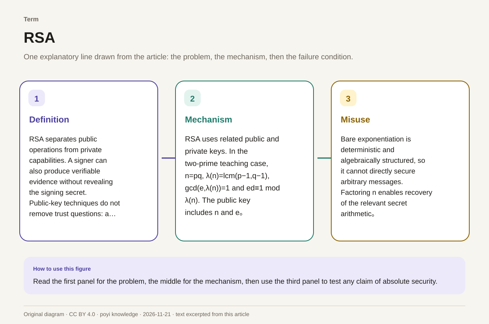

Principles
RSA uses related public and private keys. In the two-prime teaching case, n=pq, λ(n)=lcm(p−1,q−1), gcd(e,λ(n))=1 and ed≡1 mod λ(n). The public key includes n and e; secret values such as d require protection.
For an in-range integer representative m, the primitives compute c=mᵉ mod n and m=cᵈ mod n. Small numbers explain algebra, not a complete encryption or signature scheme.

Why it matters
It separates public operations from private capabilities. A signer can also produce verifiable evidence without revealing the signing secret. Public-key techniques do not remove trust questions: a user still needs to establish whose key is being used and what identity the message is bound to.
Applications
RFC 8017 separately defines RSAES encryption and RSASSA signature schemes, including RSAES-OAEP and RSASSA-PSS. Signing is not simply encrypting with the private key TLS 1.3 as specified by RFC 9846 illustrates the distinction: RSA signatures may authenticate peers, while legacy RSA key transport is absent.
Limits & attacks
Bare exponentiation is deterministic and algebraically structured, so it cannot directly secure arbitrary messages. Factoring n enables recovery of the relevant secret arithmetic, but difficulty of factoring is not a complete security proof for every RSA construction. Encoding, validation and key exposure matter alongside the algebra.
History
Rivest, Shamir and Adleman published A Method for Obtaining Digital Signatures and Public-Key Cryptosystems in 1978. RFC 8017 republished PKCS #1 v2.2 in 2016. The paper and specification show different layers: a mathematical construction and carefully defined schemes, encodings and interchange rules.
Worked example & verification
Public teaching parameters: p=61, q=53, n=3233 and λ(n)=780. Choose e=17 and d=413: 17×413=7021≡1 mod 780. For m=65, c=2790 and 2790^413 mod 3233=65. verify.mjs checks every representative 0…3232. These tiny public numbers provide no real secrecy.
References
- R. L. Rivest, A. Shamir and L. Adleman, A Method for Obtaining Digital Signatures and Public-Key Cryptosystems, Communications of the ACM 21(2), 1978, pp. 120–126
- K. Moriarty et al., RFC 8017, PKCS #1: RSA Cryptography Specifications Version 2.2, November 2016
- Eric Rescorla, RFC 9846, The Transport Layer Security (TLS) Protocol Version 1.3; obsoletes RFC 8446